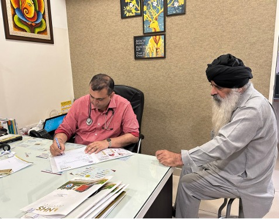
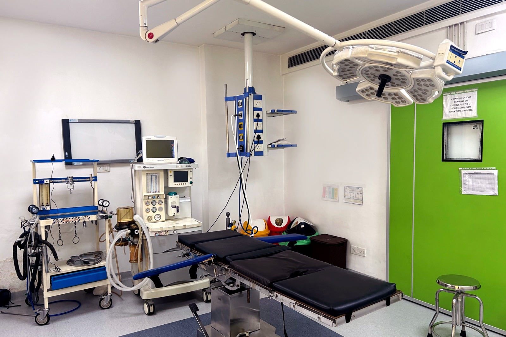
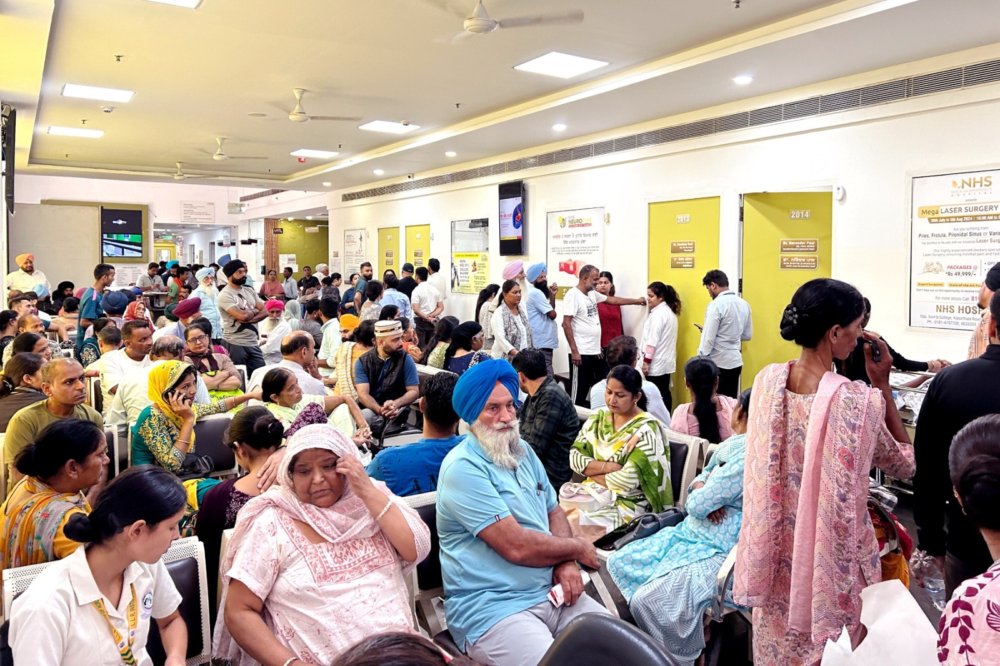

Angiography & angioplastyਐਂਜੀਓਗ੍ਰਾਫ਼ੀ ਤੇ ਐਂਜੀਓਪਲਾਸਟੀ
Coronary angiography to see the blockage, and angioplasty with stenting where indicated.ਬੰਦ ਨਾੜੀ ਦੇਖਣ ਲਈ ਐਂਜੀਓਗ੍ਰਾਫ਼ੀ।
Discuss with our teamਸਾਡੀ ਟੀਮ ਨਾਲ ਗੱਲ ਕਰੋUnderstand your heart health with a specialist who helps you make sense of your symptoms, reports and treatment options.ਆਪਣੇ ਲੱਛਣਾਂ, ਰਿਪੋਰਟਾਂ ਅਤੇ ਇਲਾਜ ਦੇ ਵਿਕਲਪਾਂ ਬਾਰੇ ਦਿਲ ਦੇ ਮਾਹਿਰ ਨਾਲ ਗੱਲ ਕਰੋ।
Specialist expertise. Personal attention.ਮਾਹਿਰ ਦੀ ਸਲਾਹ। ਤੁਹਾਡੇ ਲਈ ਖ਼ਾਸ ਧਿਆਨ।
Every step of the way.ਹਰ ਕਦਮ ਉੱਤੇ।

REAL PEOPLE. PERSONALISED CARE.ਤੁਹਾਡੇ ਲਈ ਖ਼ਾਸ ਦੇਖਭਾਲ।Explore the concerns our team evaluates. Your specialist will recommend the care appropriate for you.ਸਾਡੀ ਟੀਮ ਨਾਲ ਆਪਣੀ ਸਮੱਸਿਆ ਬਾਰੇ ਗੱਲ ਕਰੋ। ਇਲਾਜ ਦੀ ਸਲਾਹ ਜਾਂਚ ਤੋਂ ਬਾਅਦ ਦਿੱਤੀ ਜਾਂਦੀ ਹੈ।
Coronary angiography to see the blockage, and angioplasty with stenting where indicated.ਬੰਦ ਨਾੜੀ ਦੇਖਣ ਲਈ ਐਂਜੀਓਗ੍ਰਾਫ਼ੀ।
Discuss with our teamਸਾਡੀ ਟੀਮ ਨਾਲ ਗੱਲ ਕਰੋEvaluation may include ECG, echocardiography, stress testing, CT angiography or cardiac catheterisation. Treatment is based on clinical assessment.ਡਾਕਟਰ ਰਿਪੋਰਟਾਂ ਪੜ੍ਹ ਕੇ ਲਿਖਦਾ ਹੈ।
Discuss with our teamਸਾਡੀ ਟੀਮ ਨਾਲ ਗੱਲ ਕਰੋECG, echo and stress testing to work out whether symptoms are cardiac or something else.ECG, ਈਕੋ ਤੇ ਸਟਰੈੱਸ ਟੈਸਟ।
Discuss with our teamਸਾਡੀ ਟੀਮ ਨਾਲ ਗੱਲ ਕਰੋAssessment of palpitations, blackouts and slow rhythms, with pacemaker implantation when indicated.ਧੜਕਣ ਦੀ ਜਾਂਚ, ਪੇਸਮੇਕਰ।
Discuss with our teamਸਾਡੀ ਟੀਮ ਨਾਲ ਗੱਲ ਕਰੋMedical management, monitoring and review after a heart attack or a procedure.ਦਵਾਈਆਂ ਨਾਲ ਇਲਾਜ ਤੇ ਨਿਗਰਾਨੀ।
Discuss with our teamਸਾਡੀ ਟੀਮ ਨਾਲ ਗੱਲ ਕਰੋPreventive cardiology and risk-factor care tailored to your health.ਬੀ.ਪੀ., ਕੋਲੈਸਟਰੋਲ, ਸ਼ੂਗਰ ਦਾ ਇਲਾਜ।
Discuss with our teamਸਾਡੀ ਟੀਮ ਨਾਲ ਗੱਲ ਕਰੋConsultant Cardiologist — interventional cardiologyਦਿਲ ਦੇ ਰੋਗਾਂ ਦੇ ਮਾਹਿਰ
Dr. Sahil Sareen provides specialist evaluation and treatment planning for coronary artery disease, heart failure, structural heart conditions and rhythm disorders.ਦਿਲ ਦੇ ਵਿਭਾਗ ਦੀ ਅਗਵਾਈ ਕਰਦੇ ਹਨ।
Areas of expertise include coronary artery disease, heart failure, structural heart interventions, pacemaker and ICD therapy, and preventive cardiology. OPD Monday–Saturday, 10:30 AM–3:00 PM, by appointment.ਡਿਗਰੀਆਂ ਦੀ ਜਾਣਕਾਰੀ ਕਾਊਂਟਰ ਤੋਂ ਲਈ ਜਾ ਸਕਦੀ ਹੈ।
Request an appointmentਮੁਲਾਕਾਤ ਲਈ ਬਿਨਤੀ ਕਰੋFrom your first consultation to specialist treatment, get to know the spaces and people behind your care.ਜਲੰਧਰ ਵਿੱਚ ਸਾਡੇ ਹਸਪਤਾਲ ਦੀਆਂ ਅਸਲ ਤਸਵੀਰਾਂ ਵੇਖੋ।


From your first enquiry to a conversation with your specialist, here’s how to get started.ਬਿਨਤੀ ਤੋਂ ਮਾਹਿਰ ਦੀ ਸਲਾਹ ਤੱਕ, ਸ਼ੁਰੂਆਤ ਇਸ ਤਰ੍ਹਾਂ ਕਰੋ।
Request a callback or call our appointment desk. Share the concern you’d like help with.ਕਾਲ ਲਈ ਬਿਨਤੀ ਕਰੋ ਜਾਂ ਮੁਲਾਕਾਤ ਕਾਊਂਟਰ ਨੂੰ ਫ਼ੋਨ ਕਰੋ।
Bring your reports and current prescriptions. Discuss your symptoms and ask your questions.ਰਿਪੋਰਟਾਂ ਅਤੇ ਦਵਾਈਆਂ ਦੀ ਸੂਚੀ ਲਿਆਓ। ਆਪਣੇ ਸਵਾਲ ਮਾਹਿਰ ਨੂੰ ਪੁੱਛੋ।
Your doctor explains any recommended tests and treatment options for your individual needs.ਡਾਕਟਰ ਤੁਹਾਡੀ ਲੋੜ ਮੁਤਾਬਕ ਜਾਂਚ ਅਤੇ ਇਲਾਜ ਦੇ ਵਿਕਲਪ ਸਮਝਾਉਣਗੇ।
Leave your details and our appointment team will call you during OPD hours to help arrange your visit.ਆਪਣੇ ਵੇਰਵੇ ਭੇਜੋ। ਸਾਡੀ ਟੀਮ OPD ਦੇ ਸਮੇਂ ਫ਼ੋਨ ਕਰਕੇ ਮੁਲਾਕਾਤ ਵਿੱਚ ਮਦਦ ਕਰੇਗੀ।
Prefer to call?ਫ਼ੋਨ ਕਰਨਾ ਚਾਹੁੰਦੇ ਹੋ?0181-4633333Near Sports College, 300 m from Kapurthala Chowk, Jalandhar, Punjab 144001ਸਪੋਰਟਸ ਕਾਲਜ ਦੇ ਨੇੜੇ, ਕਪੂਰਥਲਾ ਚੌਕ ਤੋਂ 300 ਮੀਟਰ, ਜਲੰਧਰ, ਪੰਜਾਬ 144001
Our appointment team will contact you during OPD hours to discuss your concern and available appointments. Your visit is confirmed by the team.ਸਾਡੀ ਟੀਮ OPD ਸਮੇਂ ਸੰਪਰਕ ਕਰੇਗੀ ਅਤੇ ਮੁਲਾਕਾਤ ਦੀ ਪੁਸ਼ਟੀ ਕਰੇਗੀ।
Yes. Bring your previous reports, scans and current prescriptions so your specialist can review your history.ਹਾਂ। ਆਪਣੀਆਂ ਪੁਰਾਣੀਆਂ ਰਿਪੋਰਟਾਂ, ਸਕੈਨ ਅਤੇ ਦਵਾਈਆਂ ਦੀ ਸੂਚੀ ਨਾਲ ਲਿਆਓ।
Call our desk before your visit. The team can help you check your insurer or scheme and the documents needed. Coverage is subject to approval.ਮੁਲਾਕਾਤ ਤੋਂ ਪਹਿਲਾਂ ਸਾਡੇ ਕਾਊਂਟਰ ਨੂੰ ਫ਼ੋਨ ਕਰੋ। ਬੀਮੇ ਦੀ ਮਨਜ਼ੂਰੀ ਅਤੇ ਲੋੜੀਂਦੇ ਦਸਤਾਵੇਜ਼ਾਂ ਬਾਰੇ ਪੁੱਛੋ।
Call 0181-4707700 or go to your nearest emergency department. Please do not wait for a callback for an emergency.0181-4707700 ਉੱਤੇ ਫ਼ੋਨ ਕਰੋ ਜਾਂ ਨੇੜੇ ਦੇ ਐਮਰਜੈਂਸੀ ਵਿਭਾਗ ਜਾਓ। ਕਾਲ ਦੀ ਉਡੀਕ ਨਾ ਕਰੋ।
Need urgent care?ਤੁਰੰਤ ਮਦਦ ਚਾਹੀਦੀ ਹੈ? For a medical emergency, call our emergency desk or visit your nearest emergency department.ਐਮਰਜੈਂਸੀ ਲਈ ਸਾਡੇ ਕਾਊਂਟਰ ਨੂੰ ਫ਼ੋਨ ਕਰੋ ਜਾਂ ਨੇੜੇ ਦੇ ਐਮਰਜੈਂਸੀ ਵਿਭਾਗ ਜਾਓ।
0181-4707700